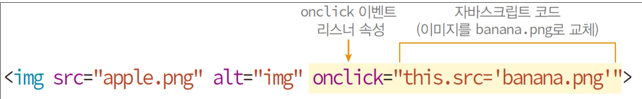

자바스크립트 코드 작성이 가능한 위치 1) HTML 태그의 이벤트 리스너 속성에 작성 2) <script></script> 태그에 작성 3) 자바스크립트 파일에 작성  작성 예시 // HTML 태그의 이벤트 리스너 속성에 자바스크립트 코드 작성 <html> <head> <title>이벤트 리스너 속성에 자바스크립트 코드</title> </head> <body> <h3> 마우스 올려 보세요</h3> <hr> <img src="이미지 이름" alt="이미지" onmouseover="this.src=‘이미지1 '" onmouseout="this.src='이미지2'"> </body> </html>